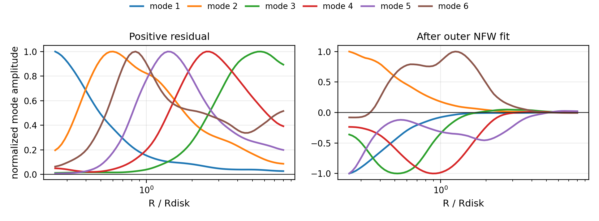
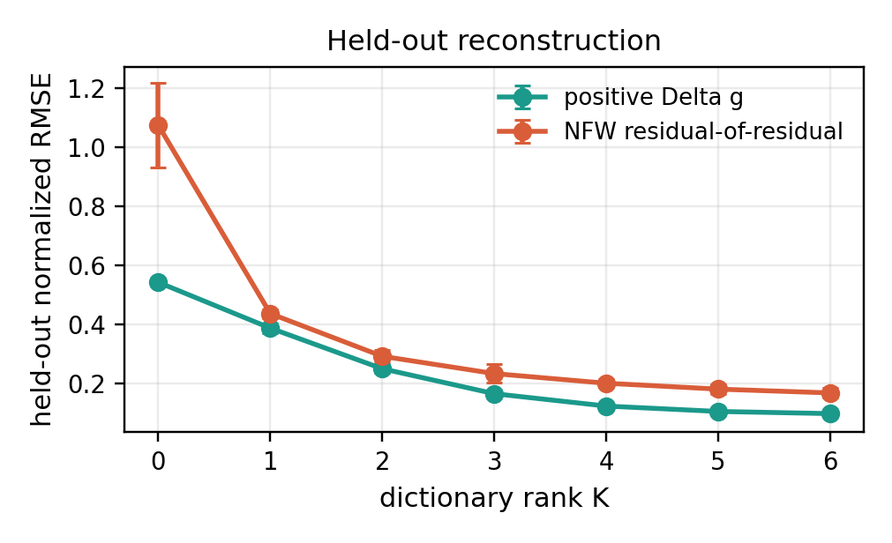
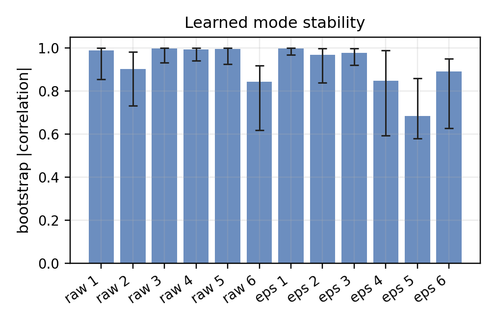
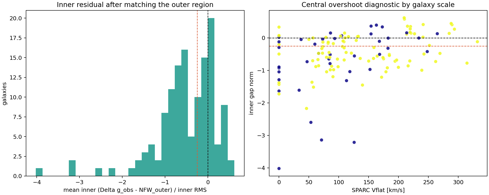
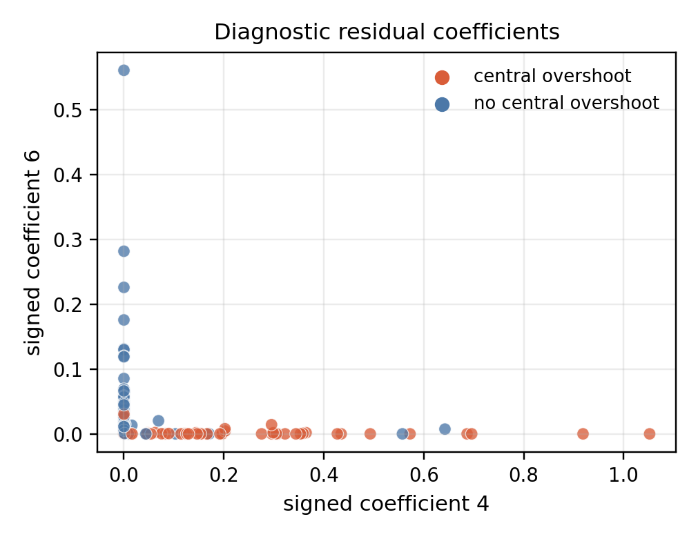

Start with the inverse problem
Observed baryons predict one acceleration field. The measured rotation curve implies another. Their difference is the missing field to explain.
A machine-learning view of the missing-mass inverse problem: fit the physical baseline, subtract it, then learn whether the leftover residual field has stable population structure.
Narrative
Rotation curves are usually treated as a contest between named physical models. This project asks a quieter question: after a chosen model has had its chance, is the remaining geometric field random noise, or does it repeat across galaxies?
Observed baryons predict one acceleration field. The measured rotation curve implies another. Their difference is the missing field to explain.
The experiment fits an outer-region NFW residual model first. The learned target is not the raw curve; it is what remains after that baseline is subtracted.
A smooth masked dictionary compresses residual fields on a common radius grid, exposing recurring modes and coefficients that can be checked against independent diagnostics.
Mathematics
The residual-of-residual construction separates baseline variation from misspecification structure. Intuitively, the algorithm learns the coherent field that survives after the fitted source family has been removed.
The baryon-subtracted acceleration residual is the inferred field.
After fitting a baseline source model, the learned object is:
Signed residuals are represented as two nonnegative channels, so dictionary coefficients remain interpretable and constrained.
On the common normalized-radius grid, each galaxy is approximated by a small set of shared residual shapes:
Missing radial entries are handled by a mask, so the loss is evaluated only where a galaxy has observed coverage:
The simplest rotation-curve fact already has geometric content. If the excess circular speed is approximately flat, then
so the residual acceleration is a \(1/R\) field, the weak-field potential perturbation is logarithmic, and the spherical effective-density proxy has an \(R^{-2}\) tail:
This is not a claim that galaxies are spherical. It is the clean diagnostic bridge from a rotation-curve residual to an inferred geometric field.
Let each profile decompose into a fitted baseline component, a latent misspecification component, and noise:
Baseline projection forms the residual
Thus any cone generated by the misspecification modes is preserved after subtraction:
The reason for subtracting first is visible in the raw covariance. If baseline variation has scale \(c\), then
For sufficiently large \(c\), leading raw components are baseline directions. Residual learning removes \(\mathcal B\) before discovering the population structure in \(S\).
Raw profiles mix large baseline variation with smaller leftover structure.
Project out the fitted baseline before learning the dictionary.
Under an idealized baseline-projection model, this removes arbitrary baseline amplitude and preserves the latent misspecification modes exactly.
The method is a model-criticism tool, not a direct declaration that one physical theory has won.
Results
The strongest empirical claim is modest and useful: on the primary-quality SPARC sample, low-rank dictionaries reconstruct held-out radial points far better than a population mean, and the signed modes are stable enough to interpret.





This is dictionary learning for an inverse problem with a structured nuisance baseline. The learning target is not the whole galaxy, but the projected residual field.
The results do not decide between dark matter and modified gravity. They show that leftover rotation-curve geometry is learnable, stable, and diagnostic.
The immediate learning upgrade is held-out-galaxy validation: train population modes on some galaxies and predict residual structure in galaxies never used for fitting.
Artifacts
The public-facing artifacts are the main conference paper and the earlier note sketches. The repository README is the entry point for code, data, and reproducibility details.
Eight-page statistical learning manuscript with theorem, SPARC experiment, figures, and references.
PDF noteEarlier real-data note developing the NFW residual-of-residual diagnostic.
PDF noteSynthetic note isolating the residual-of-residual idea before the SPARC run.
PDF noteOriginal weak-field geometric-residual framing and warp-search manuscript.
RepositoryStart here for the code structure, experiment runners, data outputs, and scope notes.